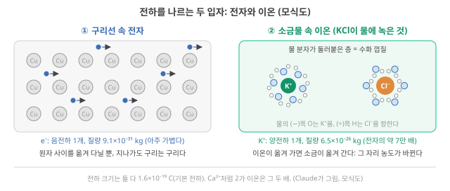
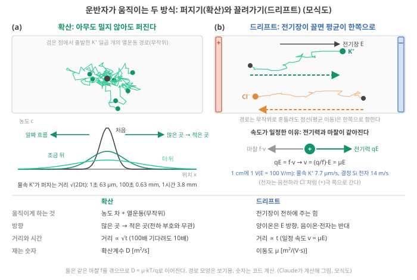
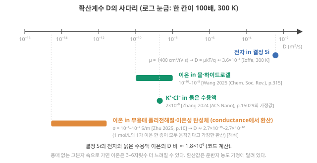
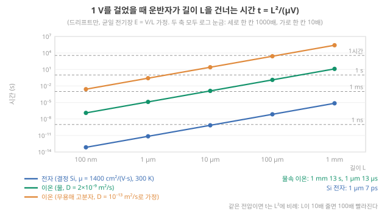
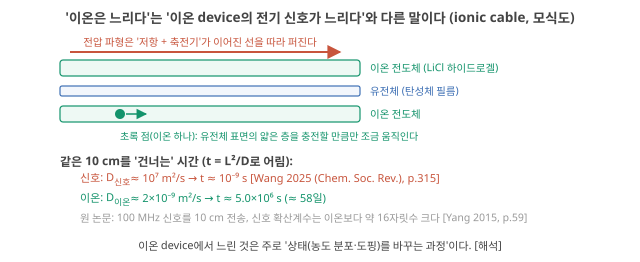

Day 33. 이온과 전자의 숫자: 이동도·확산·상태
Phase 4 · 왜 이온성 고분자인가
이번 질문 — 이온과 전자의 이동도·확산계수는 얼마나 다르고, 느린 것은 왜 신호가 아니라 상태인가?
배울 핵심 — 전자와 이온의 차이(수화 껍질·무게·조성 변화), 확산과 드리프트를 잇는 D = μkT/q, 건너는 시간 t = L²/(μV)의 두 원인(재료·크기), 느린 것은 신호가 아니라 상태
이후 쓰이는 곳 — Day 35–36 전기이중층·도핑이 만드는 기억, Day 37 확산 시간 L²/D, Day 38 고분자 화학이 D를 바꾸는 방식, Day 39 전도도 σ = nqμ와 성능
지난 학습 복습
지난 학습 단위(Day 32 · 재현성과 신뢰성, Phase 3 종합)의 핵심을 다른 예로 확인합니다. 고르는 즉시 맞았는지와 이유가 보입니다. 틀려도 아래 학습자료는 그대로 열려 있고, 틀린 문제에는 다시 볼 곳이 붙습니다.
사전 테스트 (선택)
사전 테스트 펼치기 · 배우기 전에 짐작해 보는 문제 (선택)
학습자료
Phase 4의 첫 Day입니다. Phase 3까지는 "좋은 물리 reservoir(입력의 흔적을 내부 상태에 담는 물리계, Day 12 4구간)를 무엇으로 판정하나"를 물었습니다. Phase 4는 그 판정의 재료 쪽 원인으로 내려갑니다. 이온이 어떻게 움직이고, 그 움직임이 어떤 기억과 비선형을 만들고, 그것을 고분자 화학으로 어떻게 바꿀 수 있는지. 이번 Day는 그 첫 질문, "왜 전자가 아닌 이온인가"입니다.
이 질문에 "생체친화적이다", "저전력이다" 같은 한 줄로 답하면 Day 49–50에서 아무것도 결정할 수 없습니다. 그래서 이번에는 전자와 이온을 같은 물리량으로 나란히 놓고, 이온에만 있는 자유도를 세고, 이온이 지는 축을 숫자와 조건으로 적습니다. 다섯 개의 작은 질문으로 갑니다.
- 운반자가 "얼마나 잘 움직이나"를 재는 두 숫자, 이동도와 확산계수는 무엇인가? 전자와 이온은 몇 자릿수 다른가?
- "이온은 느리다"에서 느린 것은 정확히 무엇인가? 신호인가, 상태 변화인가?
- 전자에는 없고 이온에는 있는 자유도는 무엇인가? (여러 종류의 운반자, 화학 선택성, 연성·수계)
- 이온이 이기기 어려운 영역(속도·정밀도·집적 밀도)은 숫자로 얼마나 떨어져 있고, 연구는 지금 어디까지 왔나?
- 그래서 "왜 이온인가"를 어떤 문장으로 써야 정직한가?
이 자료는 이온 뉴로모픽을 정당화하는 글이 아닙니다. 4구간의 표를 채운 뒤 "내 소재가 이길 수 있는 칸이 하나라도 있는가"를 내 답에서 스스로 판단하세요.
1–2구간은 작은 예 하나, 묽은 소금물 속 K⁺(칼륨 이온)를 끝까지 따라갑니다. 같은 숫자 \(D = 2\times10^{-9}\) m²/s가 속도, 건너는 시간, ionic cable의 비교까지 이어집니다.
1. 운반자의 숫자: 이동도와 확산계수
이 구간을 읽고 나면 확산과 드리프트를 실험실 장면으로 설명하고, 이동도와 확산계수를 아인슈타인 관계로 서로 바꾸며, 결정 실리콘의 전자·물속 이온·고분자 속 이온이 몇 자릿수 다른지 숫자로 말할 수 있다.
전기를 나르는 입자를 운반자(carrier)라고 부릅니다. 구리선과 실리콘 칩에서는 전자가, 소금물과 하이드로겔과 이온겔에서는 이온이 운반자입니다. "이온은 전자보다 느리다"는 말은 누구나 하지만, 얼마나 느린지, 그리고 무엇을 기준으로 느린지는 숫자가 있어야 말할 수 있습니다. 그 숫자가 이동도와 확산계수입니다. 숫자로 가기 전에, 두 운반자가 어떻게 생겼는지부터 봅니다(그림 1).
전자와 이온: 전하를 나르는 두 입자
전자(electron)는 Day 1 기초: 전압과 전류에서 전선 속 전류를 나르던 음(−)전하 입자입니다. 원자의 바깥쪽에 있고 아주 가볍습니다(9.1×10⁻³¹ kg). 구리선이나 실리콘 칩 안에서 원자 사이를 옮겨 다니며 전하를 나르고, 지나간 뒤에도 구리는 구리입니다(그림 1 ①).
이온(ion)은 전자를 잃거나 얻어 전하를 띤 원자(또는 원자 묶음)입니다. 소금 KCl은 칼륨(K) 원자가 전자 하나를 내준 K⁺와 그 전자를 받은 염소의 Cl⁻가 번갈아 쌓인 결정이고, 물에 녹이면 둘이 떨어져 K⁺(양이온)와 Cl⁻(음이온)가 물속을 따로 떠다닙니다. 위첨자는 전하가 기본 전하(전자 하나의 전하 크기, 1.6×10⁻¹⁹ C)의 몇 배인지를 뜻합니다. K⁺는 +1, Ca²⁺는 +2이고, 이 배수를 가수(valence, \(z\))라 합니다.

그림 1 ②에서 볼 두 가지:
- 수화 껍질(hydration shell). 물 분자는 산소(O) 쪽이 조금 (−), 수소(H) 쪽이 조금 (+)를 띱니다. 그래서 K⁺ 둘레에는 물 분자가 O 쪽을 안으로, Cl⁻ 둘레에는 H 쪽을 안으로 향해 달라붙고, 이온은 이 물 분자 층을 두른 채로 움직입니다.
- 무게와 물질의 이동. K⁺ 하나는 6.5×10⁻²⁶ kg으로 전자의 약 7만 배입니다. 그리고 이온이 움직이면 소금 자체가 옮겨 갑니다. K⁺와 Cl⁻가 한쪽으로 모이면 그쪽 소금물은 진해지고 다른 쪽은 묽어집니다. 이 차이는 3구간의 '이온에만 있는 자유도'로 다시 나옵니다.
이 Day의 1–2구간은 묽은 소금물 속 K⁺ 하나를 작은 예로 끝까지 따라갑니다.
이제 두 운반자가 "얼마나 잘 움직이나"를 같은 그림, 같은 단위 위에 놓습니다.
이동도·확산계수와 자릿수 비교
① 왜 필요한가. 이온 소자의 상태(전도도, 전압)가 바뀌려면 이온이 어디론가 움직여야 합니다. 전극 표면에 모이거나, 접합에서 빠져나가거나, 고분자 속으로 들어가야 하죠. 그 움직임이 얼마나 빠른지가 소자의 응답 시간과 기억 시간을 정합니다(Day 37). 전자 소자와 비교하려면 두 운반자를 같은 단위로 적어야 합니다.
② 무엇인가: 두 가지 움직임(그림 2). 운반자가 움직이는 방식은 두 가지입니다. 그림 2에서 먼저 볼 것: 왼쪽 ①은 아무도 밀지 않는데 저절로 퍼지는 움직임, 오른쪽 ②는 전기장(electric field, \(E\): 1 m당 걸린 전압, 단위 V/m)이 한쪽으로 끄는 움직임입니다. 두 칸 모두 위쪽이 입자 하나하나의 경로이고, 그 아래가 모아 본 결과입니다. 그림 속 식(\(qE\), \(f\cdot v\), \(\mu E\))과 숫자는 아래 글에서 하나씩 풉니다.

- 확산(diffusion). 물컵에 잉크 한 방울을 떨어뜨리면 아무도 휘젓지 않아도 퍼집니다. 분자 하나하나는 열 때문에 이웃 분자와 부딪히며 아무 방향으로나 움직입니다(그림 2 ① 위). 그런데 많은 곳에서 적은 곳으로 나가는 분자가 그 반대보다 많으니, 알짜로는 농도가 고르게 됩니다(그림 2 ① 아래). 이것을 식으로 적은 것이 Fick 법칙 \(J = -D\,dc/dx\)입니다(\(c\): 농도, \(dc/dx\): 옆으로 1 m 갈 때 농도가 바뀌는 양, 곧 농도 기울기, \(J\): 1초 동안 1 m²의 면을 지나가는 입자의 양, 곧 흐름. 앞의 −는 흐름이 농도가 줄어드는 쪽, 곧 많은 곳 → 적은 곳으로 간다는 뜻). 흐름이 기울기에 비례하고, 그 비례 상수가 확산계수 \(D\) [m²/s]입니다. 단위가 "넓이 ÷ 시간"인 이유는, 무작위로 앞뒤로 흔들리는 걸음은 서로 상당 부분 상쇄되어 간 거리가 시간이 아니라 시간의 제곱근에 비례하기 때문입니다. 한 방향으로 퍼지는 전형적인 거리는 \(\sqrt{2Dt}\)이고, 100배 오래 기다려도 10배만 더 퍼집니다.
- 드리프트(drift). 소금물에 전극 두 개를 넣고 전압을 걸면, 양이온은 (−) 쪽으로, 음이온은 (+) 쪽으로 끌려갑니다. 이온은 여전히 열 때문에 무작위로 흔들리지만, 그 흔들림 위에 전기장이 늘 한쪽으로 미는 힘이 더해져 평균 위치가 한 방향으로 옮겨 갑니다(그림 2 ②).
- 왜 속도가 일정한가. 전하 \(q\)에 전기장 \(E\)가 주는 힘은 \(qE\)입니다. 이온이 움직이면 물 분자와 부딪히는 마찰이 속도에 비례해 \(f\,v\)만큼 반대로 걸립니다(\(f\)는 마찰 계수, 단위 N·s/m: 1 m/s로 끌고 가는 데 드는 힘). 물속에 떨어뜨린 작은 구슬이 곧 일정한 속도로 가라앉듯, 아주 짧은 시간 안에 두 힘이 같아지고(\(qE = fv\)) 그 뒤로는 속도가 일정합니다: \(v = (q/f)\,E\).
- 이동도의 뜻. 이 비례 상수 \(q/f\)가 이동도 \(\mu\)입니다: \(v = \mu E\). 말로 하면 "전기장 1 V/m가 운반자를 몇 m/s로 끄나"이고, 단위는 (m/s) ÷ (V/m) = m²/(V·s)입니다. 마찰이 작을수록 이동도가 큽니다. 예: \(\mu = 7.7\times10^{-8}\) m²/(V·s)인 이온은 1 V/m에서 초속 \(7.7\times10^{-8}\) m, 100 V/m에서 그 100배로 끌려갑니다(아래 단계 3).
- (같은 영어 단어 drift가 Day 32에서는 "시간이 지나며 소자 응답이 서서히 변하는 것"을 뜻했습니다. 두 뜻을 섞지 않도록 이 교재에서는 전기장에 끌리는 이동을 드리프트, 시간에 따른 응답 변화를 drift로 적습니다.) 이 교재에서 이 식은 크기끼리의 관계입니다. \(\mu\)는 늘 양수로 두고, 움직이는 방향은 전하의 부호가 정합니다(양이온은 전기장 방향, 음이온은 반대 방향).
③ 둘은 어떻게 이어지나: 아인슈타인 관계. 확산과 드리프트는 같은 마찰 \(f\)를 겪습니다. 드리프트에서는 방금 본 대로 \(\mu = q/f\)입니다. 확산에서는 열이 주는 흔들림의 세기(\(kT\), 입자 하나가 가진 열에너지의 크기)를 마찰이 얼마나 누르느냐가 퍼지는 빠르기를 정해 \(D = kT/f\)입니다. 물리화학 교재의 스토크스–아인슈타인 식 \(D = kT/(6\pi\eta r)\)이 바로 물속 구형 입자의 마찰 \(f = 6\pi\eta r\)(\(\eta\) 점도: 액체가 끈적한 정도, \(r\) 반지름)를 넣은 경우입니다. 두 식을 나누면 \(f\)가 사라지고, 열평형에서 성립하는 아인슈타인 관계가 남습니다.
\[ D = \mu\,\frac{kT}{q} \]
- 왜 지금 필요한가: 전자 쪽 문헌은 보통 \(\mu\)를, 이온 쪽 문헌은 보통 \(D\)를 보고합니다. 이 식이 있어야 둘을 같은 축에 놓을 수 있습니다.
- 기호: \(k\)는 볼츠만 상수(1.38×10⁻²³ J/K), \(T\)는 절대온도, \(q\)는 운반자 하나의 전하(1가 이온·전자는 1.6×10⁻¹⁹ C). 2가 이온이면 \(q\)가 두 배입니다.
- 단위: \(kT/q\)는 전압 단위이고 300 K에서 25.8 mV입니다. "열 때문에 흔들리는 에너지를 전하 하나당 전압으로 적은 값"이라 열전압이라 부릅니다(Day 1 1-2절에서 문턱 아래 전류의 기울기를 정한 그 값). 단위를 따라가면 (m²/(V·s)) × V = m²/s로 \(D\)의 단위가 됩니다.
- 계산 순서: \(\mu\)를 알면 25.8 mV(= 0.0258 V)를 곱해 \(D\)를, \(D\)를 알면 0.0258로 나눠 \(\mu\)를 얻는다.
- 결과의 뜻: 이동도와 확산계수는 같은 "움직이기 쉬움"을 두 방식으로 잰 것이다.
심화 · \(D = \mu kT/q\)를 한 줄씩 유도하기: 평형에서 두 흐름이 비기는 조건
전해질 기둥에 전기장 \(E\)가 \(+x\) 방향으로 걸려 있고, 전류가 흐르지 않는 평형을 생각합니다(1가 양이온, 농도 \(n(x)\)).
- 드리프트는 양이온을 \(+x\)로 보냅니다. 단위 면적·단위 시간당 흐름은 \(n\mu E\).
- 그렇게 \(+x\) 쪽에 이온이 쌓이면 농도 차가 생기고, 확산이 반대로 \(-D\,dn/dx\)만큼 돌려보냅니다.
- 평형이면 둘이 비깁니다: \(D\,dn/dx = n\mu E\).
- 한편 평형의 농도는 볼츠만 분포를 따릅니다(Day 1 1-2절에서 장벽을 넘는 전자 수를 정한 그 분포). 양이온의 전기적 위치에너지는 \(+x\)로 갈수록 \(qEx\)만큼 낮아지므로 \(n \propto e^{qEx/kT}\)이고, 미분하면 \(dn/dx = n\,qE/kT\).
- 3에 넣으면 \(D\,n\,qE/kT = n\mu E\), 곧 \(D = \mu kT/q\).
④ 작은 숫자로 따라가기.
단계 1 — 물속 K⁺의 확산. 묽은 수용액 속 K⁺·Cl⁻의 확산계수는 약 \(2\times10^{-9}\) m²/s입니다. Zhang 2024가 소자의 시간척도를 어림할 때 "벌크 용액 값"으로 가정한 숫자입니다. Zhang 2024 (ACS Nano), p.15029 1초 동안 퍼지는 거리는 \(\sqrt{2 \times 2\times10^{-9} \times 1} = 6.3\times10^{-5}\) m = 63 µm, 100초면 0.63 mm, 1시간이면 3.8 mm입니다. 시간이 100배가 되어도 거리는 10배밖에 늘지 않습니다.
단계 2 — 확산계수를 이동도로. 아인슈타인 관계를 거꾸로 씁니다. \(\mu = D \div 0.0258 = 2\times10^{-9} \div 0.0258 = 7.7\times10^{-8}\) m²/(V·s). 단위도 같이 나눕니다: (m²/s) ÷ V = m²/(V·s).
단계 3 — 드리프트 속도. 1 cm 간격의 전극에 1 V를 걸면 전기장은 \(E = 1\ \text{V} \div 0.01\ \text{m} = 100\) V/m. K⁺의 속도는 \(v = 7.7\times10^{-8} \times 100 = 7.7\times10^{-6}\) m/s = 7.7 µm/s. 1초에 머리카락 굵기의 약 10분의 1을 갑니다.
단계 4 — 같은 전기장 속 전자. 결정 실리콘 속 전자의 이동도는 물성표에 약 1400 cm²/(V·s)로 실려 있습니다(300 K, 불순물이 적을 때의 값. 불순물을 많이 넣을수록 작아집니다) Ioffe NSM (Si). 반도체 표는 길이를 cm로 적으므로 m로 바꿉니다: 1 cm = 10⁻² m이니 1 cm² = 10⁻⁴ m², 따라서 1400 cm²/(V·s) = 1400 × 10⁻⁴ = 0.14 m²/(V·s). 실리콘 막대에 같은 100 V/m를 건다면 \(v = 0.14 \times 100 = 14\) m/s이고, 방향은 K⁺와 반대입니다(전자는 음전하라 (+)극 쪽으로). 크기로 이온보다 약 180만 배 빠릅니다. 확산계수로 바꾸면 \(D = 0.14 \times 0.0258 = 3.6\times10^{-3}\) m²/s이고, 물속 이온(\(2\times10^{-9}\))과의 비도 같은 \(1.8\times10^{6}\)입니다.
단계 5 — 고분자 속 이온. 용매가 없는 폴리전해질과 이온성 탄성체의 이온전도도는 보통 \(10^{-5}\)–\(10^{-2}\) S/m이고, 이온의 움직임이 사슬의 분절 운동(사슬 일부가 꿈틀거리는 운동)에 크게 기댄다고 Zhu 리뷰는 씁니다. Zhu 2025, p.10 전도도 \(\sigma\) [S/m]는 "움직이는 운반자 수 × 하나의 전하 × 하나의 이동도", 곧 \(\sigma = n\,q\,\mu\)입니다(전기화학의 \(\kappa = \sum |z_i| F c_i u_i\)를 개수 단위로 적은 것). 그래서 전도도에서 \(D\)로 가려면 움직이는 이온의 수 \(n\)이 필요합니다(Day 39에서 자세히). 1 mol/L의 1가 이온이 모두 움직인다고 가정하고 세 걸음으로 갑니다. ① \(n\): 1 mol/L = 1000 mol/m³(1 m³ = 1000 L)이고, 여기에 아보가드로 수 6.02×10²³을 곱해 \(6.0\times10^{26}\) 개/m³. ② \(\mu = \sigma/(nq) = 10^{-5} \div (6.0\times10^{26} \times 1.6\times10^{-19}) = 1.0\times10^{-13}\) m²/(V·s)(σ = 10⁻² S/m이면 \(1.0\times10^{-10}\)). ③ \(D = \mu \times 0.0258 \approx 2.7\times10^{-15}\)–\(2.7\times10^{-12}\) m²/s [해석: 농도 가정에 따른 환산]. 실제로 움직이는 이온이 그보다 적으면 같은 전도도를 적은 이온이 내야 하므로 \(D\)는 그만큼 커집니다. 물속보다 3–6자릿수 작습니다.
심화 · 물성표의 숫자로 아인슈타인 관계 확인하기(Si 전자와 K⁺)
위 단계 2·4에서 쓴 관계가 실제 물성표의 숫자와 맞는지 두 운반자로 확인합니다.
- 결정 Si의 전자: 물성표의 이동도 1400 cm²/(V·s)에 0.02585 V를 곱하면 36.2 cm²/s이고, 같은 표에 실린 전자 확산계수 36 cm²/s와 맞습니다. Ioffe NSM (Si)
- 물속 K⁺: 전기화학에서 익숙한 극한 몰전도도 \(\lambda^\circ\)(K⁺) = 73.5 S·cm²/mol(25 °C, 무한 희석)에서 출발합니다. 몰전도도는 "전도도 ÷ 몰농도", 곧 이온 1 mol/m³당 내는 전도도이므로 이동도와 \(\lambda = |z|F\mu\)로 이어집니다(\(F\) = 96,485 C/mol은 1 mol의 전하). (1) 단위 맞추기: 73.5 S·cm²/mol = 73.5×10⁻⁴ S·m²/mol. (2) \(\mu = \lambda/F = 73.5\times10^{-4} \div 96485 = 7.62\times10^{-8}\) m²/(V·s)(S·m²/C = (A/V)·m²/(A·s) = m²/(V·s)). (3) 25 °C의 열전압 0.02569 V를 곱하면 \(D = 1.96\times10^{-9}\) m²/s. 표에 실린 K⁺의 확산계수도 1.96×10⁻⁹ m²/s입니다. 전기화학 교재의 네른스트–아인슈타인 식 \(D = RT\lambda/(z^2F^2)\)은 같은 관계를 1 mol 단위로 적은 것입니다(입자 하나 대신 1 mol로 세면 \(k \to R\), \(q \to F\)이고 \(kT/q = RT/F\)). 단, 이런 표의 무한 희석 \(D\)는 몰전도도에서 바로 이 관계로 계산해 싣는 경우가 많아, 이 대조는 독립 실험의 증명이라기보다 단위와 환산의 확인입니다. 폴더 밖 공개 자료: 몰전도도 Wikipedia "Molar conductivity", 확산계수 aqion 표
⑤ 이름과 정확한 뜻, 그리고 같은 식이 숨기는 차이. 확산계수 \(D\)는 "농도 차가 있을 때 얼마나 빨리 고르게 되나", 이동도 \(\mu\)는 "전기장에 얼마나 잘 끌려가나"입니다. 둘을 같은 식(\(v = \mu E\), \(D = \mu kT/q\))으로 적을 수 있다고 해서 전자와 이온이 같은 원리로 움직이는 것은 아닙니다. 물속 이온은 수화 껍질을 두르고 이웃 물 분자와 부딪히며 밀려가는 무거운 입자이고, 그 마찰은 용매의 점도와 이온의 크기가 정합니다. 결정(원자가 규칙적으로 줄지어 선 고체) 속 전자는 그 규칙적인 원자 배열(격자)을 거의 막힘없이 지나가는 파동(한 점이 아니라 물결처럼 퍼진 상태)에 가깝고, 이동도는 격자가 열로 흔들리는 정도(격자 진동)나 불순물에 부딪혀 방향이 흩어지는(산란) 빈도가 정합니다 [해석: 일반 물리 지식]. 그리고 결정적으로, 이온이 움직이면 그 자리의 화학 조성이 바뀝니다(어느 쪽은 염이 진해지고 어느 쪽은 묽어진다, 그림 1 ②). 전자가 금속선을 흘러도 구리는 구리입니다. 3구간의 "이온에만 있는 자유도"는 모두 이 차이에서 나옵니다.
심화 · 10⁶배는 어디서 오나: 마찰 계수를 질량과 부딪힘으로 나눠 보기
②에서 \(\mu = q/f\)였으니, 이동도의 차이는 곧 마찰 계수의 차이입니다. 전하는 둘 다 \(1.6\times10^{-19}\) C로 같습니다.
| 물속 K⁺ | 결정 Si의 전자 | |
|---|---|---|
| 이동도 \(\mu\) | \(7.7\times10^{-8}\) m²/(V·s) | 0.14 m²/(V·s) |
| 마찰 계수 \(f = q/\mu\) (1 m/s로 끄는 데 드는 힘) | \(2.1\times10^{-12}\) N·s/m | \(1.1\times10^{-18}\) N·s/m |
| 질량 | \(6.5\times10^{-26}\) kg (K 원자 하나) | \(2.4\times10^{-31}\) kg (유효질량 0.26 \(m_0\)) |
| 마찰의 기원 | 물의 점성. 스토크스 마찰 \(6\pi\eta r\)에 물의 점도 0.89 mPa·s, K⁺의 유효 반지름 약 0.125 nm를 넣으면 \(2.1\times10^{-12}\) | 격자 진동·불순물에 의한 산란. 평균 약 0.2 ps마다 운동 방향을 잃는다 |
전자 쪽 숫자를 읽는 법: 결정 속 전자는 원자 하나하나와 부딪히지 않고 규칙적인 격자를 파동처럼 지나가며, 격자가 열로 흔들리거나 불순물이 있을 때만 흩어집니다. 그 사이에 전기장이 전자를 가속하는 정도를 질량처럼 적은 것이 유효질량 \(m^*\)(실리콘 전자는 자유 전자 질량 \(m_0\)의 0.26배)이고, 이동도는 \(\mu = q\tau_{\text{s}}/m^*\)로 쓸 수 있습니다(\(\tau_{\text{s}}\)는 흩어지기까지의 평균 시간, 곧 산란 시간. 소자의 시간상수 τ와 다른 양이라 아래첨자 s를 붙였습니다). 거꾸로 풀면 \(\tau_{\text{s}} = \mu m^*/q = 0.14 \times 2.4\times10^{-31} \div 1.6\times10^{-19} \approx 0.2\) ps입니다. 같은 방식으로 이온이 "속도를 잊는 시간" \(m/f\)를 구하면 약 0.03 ps(31 fs)입니다. 정리하면 \(1.8\times10^{6}\)배 가운데 약 \(2.7\times10^{5}\)배는 질량에서, 나머지 약 7배는 이온이 물 분자에 더 자주 막힌다는 데서 옵니다(Claude 계산) [해석: 드루드 모형식 어림. 이온의 \(m/f\)는 액체 속 브라운 운동의 속도 이완 시간이고, 전자의 유효질량은 양자역학적 개념이라 같은 식으로 적었을 뿐 같은 물리가 아니다]. K⁺의 유효(스토크스) 반지름 0.125 nm는 확산계수에서 거꾸로 구해 흔히 인용되는 값이라 독립적인 예측은 아닙니다 [미확인: 원 출처 미대조]. 유효질량 0.26 \(m_0\)는 반도체 교재의 표준값입니다.
⑥ 뉴로모픽·RC와의 연결. 이온 소자의 상태가 바뀌려면 이온이 어떤 길이 \(L\)을 움직여야 합니다. 확산으로 \(L\)만큼 퍼지는 데 걸리는 시간은 \(\sqrt{2Dt} = L\)을 거꾸로 풀어 \(t \approx L^2/(2D)\), 즉 \(L^2/D\)의 자릿수입니다. 여기서는 이 감각만 가져가고, Day 37에서 이 식을 주인공으로 다룹니다.
⑦ 짧은 확인. 이동도가 10배인 운반자는 확산계수도 10배인가요? (답: 같은 온도·같은 전하라면 그렇다. \(D = \mu \times 0.0258\)에서 비례 상수가 같다.)
여기까지: 그림 2를 따라 확산(저절로 퍼짐)과 드리프트(전기장에 끌림)를 구별하고, 물속 K⁺의 \(D = 2\times10^{-9}\) m²/s에서 \(\mu = 7.7\times10^{-8}\) m²/(V·s), 1 cm에 1 V를 건 속도 7.7 µm/s, 같은 전기장 속 결정 실리콘 전자의 14 m/s를 다시 계산할 수 있다. 다음: 여러 운반자의 \(D\)를 한 줄에 놓고(그림 3), 소자를 건너는 시간으로 바꾸기.
이제 숫자를 한 줄에 놓아 봅니다(그림 3). 가로축은 로그 눈금(같은 간격이 같은 배수, Day 1 기초)이고, 눈금 한 칸이 100배입니다.

Wang 2025 리뷰는 물·하이드로겔 속 이온의 확산계수를 \(10^{-10}\)–\(10^{-8}\) m²/s로 적습니다. Wang 2025 (Chem. Soc. Rev.), p.315 같은 리뷰는 겔 속 \(D\)가 순수 용매 속과 다르며, 이온 크기와 용매 점도가 클수록 작아지고 온도가 높을수록 커질 뿐 아니라, 고분자망의 입체 장애와 이온–고분자 상용성에도 좌우되어 망이 촘촘할수록 \(D\)가 줄어든다고 씁니다. Wang 2025 (Chem. Soc. Rev.), p.305 이 문장이 Day 38(고분자 화학구조 → 계산 특성)의 출발점입니다.
적용 조건. (1) 아인슈타인 관계는 묽은 계·열평형에서 성립합니다. Wang 2025는 이온 농도가 높은 이온겔과 polyionic elastomer에서는 이온끼리, 이온과 고분자망 사이의 상호작용이 커져 기본 PNP 이론(이온의 확산·드리프트를 함께 푸는 식)의 정확도가 떨어지고, 활동도 계수(이온끼리 서로 끌고 밀어 '실제로 효과를 내는 농도'가 넣은 농도와 달라지는 정도)나 농도에 따라 바뀌는 유전율(물질이 그 안의 전기력을 얼마나 약하게 만드나) 같은 보정이 필요하다고 씁니다. Wang 2025 (Chem. Soc. Rev.), p.305 그런 계에서는 측정한 전도도·\(D\)·\(\mu\)가 위 식대로 단순 비례하지 않습니다(Day 39). (2) 1400 cm²/(V·s)는 결정 실리콘 덩어리의 값이고, 유기 반도체(탄소 사슬로 된 고분자·분자 반도체)의 정공·전자 이동도는 그보다 몇 자릿수 낮습니다 [미확인: 값의 범위]. 이온트로닉스에서 자주 만나는 OECT(유기 전기화학 트랜지스터)의 채널이 바로 이런 고분자입니다. OECT의 생김새와 동작은 3-3절의 기초 상자에서 그림으로 봅니다. 즉 "전자 vs 이온"의 간격은 어느 전자 소재와 비교하느냐에 따라 크게 달라집니다.
- 열전압 \(kT/q\) = 25.8 mV (300 K)
- 전자(결정 Si): \(\mu \approx 0.14\) m²/(V·s) → \(D \approx 3.6\times10^{-3}\) m²/s(같은 물성표의 확산계수 36 cm²/s와 일치) Ioffe NSM (Si)
- 이온(묽은 수용액): \(D \approx 2\times10^{-9}\) m²/s → \(\mu \approx 7.7\times10^{-8}\) m²/(V·s) Zhang 2024 (ACS Nano), p.15029 (환산은 Claude)
- (심화) 확인(K⁺, 25 °C): 몰전도도 73.5 S·cm²/mol → \(\mu = \lambda/F = 7.6\times10^{-8}\) m²/(V·s) → \(D = 1.96\times10^{-9}\) m²/s(표값과 같음, 폴더 밖 표)
- (심화) 마찰 계수 \(f = q/\mu\): K⁺ \(2.1\times10^{-12}\), Si 전자 \(1.1\times10^{-18}\) N·s/m. 차이의 대부분은 질량(약 \(2.7\times10^{5}\)배)
- 이온(물·하이드로겔 범위): \(10^{-10}\)–\(10^{-8}\) m²/s Wang 2025 (Chem. Soc. Rev.), p.315
- 이온전도도(무용매 폴리전해질·이온성 탄성체): \(10^{-5}\)–\(10^{-2}\) S/m Zhu 2025, p.10 → \(D \approx 10^{-15}\)–\(10^{-12}\) m²/s (1 mol/L 가정의 환산) 해석
이제 이 자릿수를 시간으로 바꿔 봅니다. 길이 \(L\)의 소자 양 끝에 전압 \(V\)를 걸면 전기장은 \(E = V/L\)이고, 운반자가 끝에서 끝까지 끌려가는 시간은 "거리 ÷ 속도"이므로
\[ t = \frac{L}{v} = \frac{L}{\mu E} = \frac{L^{2}}{\mu V} \]
입니다. \(L\)이 두 번 들어가는 이유는 둘입니다. 가야 할 거리가 \(L\)에 비례해 늘고, 같은 전압이 더 긴 거리에 나뉘어 걸려 전기장(곧 속도)이 \(L\)에 반비례해 약해집니다.
그림 4에서 먼저 볼 것: 가로축은 길이 \(L\), 세로축은 건너는 시간이고 둘 다 로그 눈금입니다. 세 직선은 운반자(재료)마다 하나씩입니다. 한 직선을 따라 오르내리면 크기의 효과, 같은 \(L\)에서 직선 사이의 세로 간격이 재료의 효과입니다.

그림 4의 초록선(물속 이온)을 식으로 따라가 봅니다. 1 V에서 물속 이온(\(\mu = 7.7\times10^{-8}\))이 1 mm를 건너는 데 \(10^{-6} \div (7.7\times10^{-8} \times 1) \approx\) 13 s, 1 µm를 건너는 데 \(10^{-12} \div 7.7\times10^{-8} \approx\) 13 µs가 걸립니다. 파란선의 실리콘 전자는 1 µm를 약 7 ps에 건넙니다. 같은 이온이라도 소자가 1 mm에서 1 µm로 작아지면 시간은 \(10^{6}\)분의 1이 됩니다. 이온이 "느린" 까닭의 한쪽은 \(\mu\)(재료)이고, 다른 쪽은 \(L^{2}\)(크기)입니다. 어느 쪽이 더 큰 몫인지는 Day 37의 질문입니다.
속도와 크기에 주는 뜻. 이동도가 \(1.8\times10^{6}\)배 작은 운반자로 같은 전압에서 같은 시간 안에 건너려면 \(L\)을 \(\sqrt{1.8\times10^{6}} \approx 1300\)배 줄여야 합니다. 그림 4에서 실리콘 전자가 1 mm를 건너는 시간(약 7 µs)과 물속 이온이 1 µm를 건너는 시간(약 13 µs)이 같은 자릿수인 것이 그 예입니다(Claude 계산). 이온 소자를 빠르게 하는 가장 강한 손잡이가 '작게 만들기'이고, 반대로 이온 소자를 cm–mm 크기로 만들면 초–분 단위의 느린 상태 변화가 자연스럽게 나온다는 뜻입니다.
물속 이온이 1 µm를 퍼지는 데(확산, \(t \approx L^2/(2D)\)) 걸리는 시간은 얼마일까요? 위 그림의 드리프트 시간(13 µs, 1 V)과 비교해 먼저 어림해 보세요. 아래 점검의 첫 문제는 풀이 예시, 둘째는 일부가 채워져 있고, 셋째는 혼자 풉니다.
내 polyelectrolyte heterojunction에서 이온이 움직여야 하는 길이는 얼마쯤인가요? 접합 두께, 전극 사이 거리, 이온이 빠져나간 층(depletion층)의 폭 가운데 무엇이 "그 소자의 \(L\)"일까요? 그 \(L\)과 내가 쓰는 전해질의 \(D\)로 \(L^{2}/D\)를 머릿속으로 계산해, 측정한 응답 시간과 같은 자릿수인지 보세요. 다르다면 그 차이가 이 Day의 '아직 모르는 것' 첫 줄입니다.
여기까지: 그림 4에서 건너는 시간 \(t = L^2/(\mu V)\)를 읽어 물속 K⁺ 1 mm 13 s, 1 µm 13 µs를 다시 계산하고, '느림'의 두 원인(재료 \(\mu\)와 크기 \(L^2\))을 나눠 말할 수 있다. 다음: 이온 소자에서 느린 것은 신호인가 상태인가.
- 운반자 (carrier)
- 전하를 실어 나르는 입자. 금속·반도체에서는 전자(와 정공), 전해질·겔에서는 이온.
- 이온 (ion) / 가수 \(z\)
- 전자를 잃거나 얻어 전하를 띤 원자·원자 묶음 / 그 전하가 기본 전하(1.6×10⁻¹⁹ C)의 몇 배인가. 물속에서는 수화 껍질을 두르고 움직이며, 움직이면 그 자리의 조성이 바뀐다.
- 확산 / 확산계수 \(D\)
- 농도 차 때문에 저절로 퍼지는 움직임 / 그 빠르기 [m²/s]. 퍼지는 거리 ~ √(2Dt).
- 드리프트 / 이동도 \(\mu\)
- 전기장에 끌려가는 일정한 속도의 움직임 / 속도 ÷ 전기장 [m²/(V·s)]. 마찰 계수 \(f\)로 쓰면 \(\mu = q/f\).
- 마찰 계수 \(f\)
- 운반자를 1 m/s로 끌고 가는 데 드는 힘 [N·s/m]. 물속 이온은 점성(스토크스 \(6\pi\eta r\)), 결정 속 전자는 산란(유효질량 ÷ 산란 시간)이 정한다.
- 아인슈타인 관계
- D = µ·kT/q. 묽은 계·열평형에서 확산과 드리프트를 잇는다. 300 K에서 kT/q = 25.8 mV(열전압).
- 정의: 확산계수(저절로 퍼지기)와 이동도(전기장에 끌려가기)는 같은 "움직이기 쉬움"을 두 방식으로 잰 것이고, 아인슈타인 관계 \(D = \mu kT/q\)로 이어진다(묽은 계·열평형 조건).
- 숫자: 결정 Si 전자 \(3.6\times10^{-3}\) Ioffe NSM (Si) vs 수용액 이온 \(2\times10^{-9}\) m²/s, 약 \(1.8\times10^{6}\)배. 무용매 고분자 속 이온은 3–6자릿수 더 작을 수 있다 Zhu 2025, p.10 해석.
- 같은 식으로 적어도 원리는 다르다: 이온은 수화 껍질을 두른 무거운 입자이고, 움직이면 그 자리의 조성이 바뀐다. (심화) \(\mu = q/f\)로 보면 10⁶배 차이의 대부분은 질량(약 2.7×10⁵배)에서 온다.
- 건너는 시간 \(t = L^{2}/(\mu V)\): 느림의 한쪽은 재료(\(\mu\)), 다른 쪽은 크기(\(L^{2}\)). 같은 시간을 맞추려면 이온 소자는 약 1000배 작아야 한다(Si 전자 1 mm ≈ 이온 1 µm). → Day 37.
2. 느린 것은 신호가 아니라 '상태'다
이 구간을 읽고 나면 이온 전도체에서 "전기 신호가 전달되는 빠르기"와 "이온이 실제로 이동하는 빠르기"가 다른 양임을 ionic cable의 숫자로 보이고, 이온 소자에서 느린 것이 무엇인지 한 문장으로 말할 수 있다.
1구간의 숫자를 보면 "이온 소자는 전기 신호도 느리게 보내겠구나"라고 생각하기 쉽습니다. 그렇지 않습니다. 이 구분이 이 Day에서 가장 중요한 한 줄입니다.
직관 하나. 물이 가득 찬 긴 호스의 한쪽 끝을 누르면, 반대쪽 끝에서 거의 동시에 물이 나옵니다. 내가 누른 그 물 분자가 호스 끝까지 달려간 것이 아니라, 호스 안의 물이 한꺼번에 조금씩 밀린 것입니다. 전선 속 전자도, 이온 전도체 속 이온도 마찬가지입니다. 신호(밀림)는 빠르게 퍼지고, 운반자 하나하나는 거의 제자리에서 조금 움직일 뿐입니다. 비유가 깨지는 곳: 물은 압력파로 밀림을 전하지만, 이온 전도체에서는 전하가 쌓이고 빠지는 저항–축전기 회로의 방식으로 전합니다(아래).
ionic cable. Suo 그룹은 LiCl 하이드로겔(LiCl 소금물을 머금은 젤) 두 가닥 사이에 얇은 유전체(전기를 통하지 않는 절연 막, 여기서는 고무 같은 탄성체 필름)를 끼운 전송선을 만들었습니다. 그림 5에서 먼저 볼 것: 세 층(겔–유전체–겔), 맨 위의 빨간 화살표(전압 파형, 곧 신호가 퍼지는 쪽), 아래 겔 속의 초록 점(이온 하나)과 그 짧은 화살표입니다. 아래쪽 숫자는 이 절 끝의 '작은 예시'에서 계산합니다.

왜 신호는 빨리 퍼지나 — 계면의 전하 층과 RC. 위 겔에 (+), 아래 겔에 (−) 전압을 걸었다고 합시다. 위 겔에서는 양이온(Li⁺)이 유전체 필름 쪽으로 밀려와 표면에 쌓이고, 필름 건너편 아래 겔에서는 음이온(Cl⁻)이 모여 반대 전하 층을 만듭니다. 전하 층 두 개가 얇은 필름을 사이에 두고 마주 보니 커패시터(축전기: 두 도체가 절연체를 사이에 두고 반대 전하를 담는 부품, Day 7 기초: 커패시터)와 같습니다 [해석: 원리 설명용 모식]. 겔과 금속 전극이 만나는 면에서도 이온이 나노미터 수준의 아주 얇은 한 겹으로 늘어서 축전기처럼 동작합니다(이 층이 전기이중층(electric double layer)이며 Day 35–36에서 자세히 봅니다). 그래서 케이블의 짧은 토막 하나하나가 "저항(겔) + 축전기(유전체)"이고, 이 토막들이 길게 이어진 선을 따라 전압 파형이 확산 방정식처럼 퍼집니다. '확산처럼'은 1구간의 확산과 같은 수학, 곧 퍼진 거리의 제곱이 시간에 비례하는 꼴이라는 뜻입니다. 원 논문은 신호의 확산계수를 \(D = 1/(rc) \approx bd/(\rho\varepsilon)\)로 적습니다. 여기서 \(b\)와 \(\rho\)는 이온 전도체의 두께와 저항률, \(d\)와 \(\varepsilon\)은 유전체의 두께와 유전율이고(이 \(d\)는 원 논문의 기호로 두께를 뜻하며, Day 22–23의 '남는 비율' \(d\)와 다른 양입니다), \(r\)·\(c\)는 길이당 저항·정전용량입니다. Yang 2015, p.60 왜 '확산계수' 꼴이 되는지는 Day 29 기초의 RC 회로로 볼 수 있습니다. 저항 \(R\)을 거쳐 커패시터 \(C\)를 충전하는 시간은 \(\tau = RC\)입니다. 길이 \(L\)의 케이블은 전체 저항 \(rL\), 전체 정전용량 \(cL\)을 가지므로 끝까지 충전되는 시간이 \(\tau \approx (rL)(cL) = rc\,L^{2}\), 곧 1구간의 \(L^{2}/D\)와 같은 꼴이고 \(D = 1/(rc)\)입니다(단위: \(r\) [Ω/m] × \(c\) [F/m] = s/m², 그 역수가 m²/s) 해석. 여기서 '확산'하는 것은 이온이 아니라 전압 파형입니다. Wang 2025는 전형적인 소자에서 이 값이 \(10^{7}\) m²/s에 이르러 물·하이드로겔 속 이온의 확산계수(\(10^{-10}\)–\(10^{-8}\) m²/s)보다 훨씬 크다고 정리합니다. Wang 2025 (Chem. Soc. Rev.), p.315 원 논문은 신호의 확산계수가 이온보다 약 16자릿수 크고, 100 MHz 신호를 10 cm 전송했다고 보고합니다. Yang 2015, p.59
작은 예시. 같은 \(t \approx L^{2}/D\) 어림으로 10 cm를 "건너는" 시간을 비교합니다.
- 신호: \(0.1^2 \div 10^{7} = 10^{-9}\) s
- 이온 자체: \(0.1^2 \div (2\times10^{-9}) = 5\times10^{6}\) s ≈ 58일
열다섯 자릿수가 넘게 다릅니다(그림 5).
그러면 이온 소자가 느리다는 말은 무엇인가. Roadmap은 전자 소자의 전하 수송이 전형적으로 ns 시간척도인 반면 이온 이동은 µs에서 s에 걸친다고 쓰고, 이 불일치가 이온–전자 변환에서 지연·에너지 손실·신호 왜곡을 만든다고 지적합니다. Roadmap 2026, p.8126 여기서 느린 것은 상태를 바꾸는 과정입니다. 농도 분포를 다시 배치하거나(이온이 한쪽에 쌓이고 다른 쪽에서 빠지는 것), 고분자 속으로 이온을 집어넣거나(도핑), 계면의 얇은 이온층을 충전하는 과정입니다. 전기 신호를 보내는 과정이 아닙니다. 해석
이 구분이 왜 중요한가. Day 1–2 4절에서 "이온 이완은 crossbar(가중치를 소자의 전도도로 저장해 곱셈·덧셈을 한 번에 하는 격자, Day 7 2구간) 같은 저장형 계산에서는 오차, RC에서는 자원"이라고 했습니다(Day 2 4절). 그 '이완'은 바로 이 상태 변화의 시간입니다. 상태 변화가 느리다는 것은, 소자가 과거 입력의 흔적을 그만큼 오래 들고 있다는 말과 같습니다(Day 15의 fading memory, 즉 과거 입력의 영향이 서서히 줄어드는 성질, Day 15 기초). 느림을 결점으로 볼지 자원으로 볼지는 과제의 시간척도가 정합니다(Day 23 기초: 시간척도의 정합). 그리고 신호 전달 자체는 느리지 않으므로, "이온이라서 실시간 처리가 안 된다"는 말은 조건 없이 쓰면 틀립니다. 해석
"이온은 느리니까 이온 소자의 모든 것이 느리다" — 자주 섞이는 두 '느림'입니다. 이온의 \(D\)가 작다는 것은 상태(농도·도핑)를 바꾸는 시간이 길다는 뜻이고, 전기 신호의 전파는 겔의 저항률과 유전체의 유전율·두께가 정합니다 Yang 2015, p.60. 그리고 상태 변화의 시간도 재료만이 아니라 \(L^{2}\)가 함께 정합니다(1구간). "느리다"라고 쓸 때는 무엇이, 어느 길이에서, 어느 과제에 비해 느린지를 붙이세요.
내 ionic diode에 전압을 바꿔 걸었을 때 전류가 새 값에 자리 잡는 데 걸리는 시간(수 초?)과, 같은 소자에 작은 교류를 걸어 재는 임피던스 측정에서 고주파 쪽에 보이는 빠른 응답은 서로 다른 '느림'을 보고 있습니다. 각각 그림 5의 어느 쪽(상태 변화 / 신호 전달)에 가까운가요?
여기까지: 그림 5를 따라 ionic cable에서 신호(10 cm에 \(10^{-9}\) s)와 이온 자체(약 58일)가 다른 양임을 말하고, '이온 소자가 느리다'를 '무엇이(상태 변화), 어느 길이에서, 어느 과제에 비해' 느린지로 고쳐 쓸 수 있다. 다음 학습 단위: 3구간, 전자에는 없고 이온에는 있는 자유도.
- ionic cable의 신호 확산계수는 \(\sim10^{7}\) m²/s, 이온은 \(10^{-10}\)–\(10^{-8}\) m²/s Wang 2025 (Chem. Soc. Rev.), p.315. 원 논문: 약 16자릿수 차이, 100 MHz를 10 cm 전송 Yang 2015, p.59. 신호 전달은 느리지 않다.
- 느린 것은 상태 변화(농도 재배치·도핑·계면 충전). 이온 이동 µs–s vs 전자 ns Roadmap 2026, p.8126.
- 상태 변화가 느림 = 과거 입력의 흔적이 오래 남음. 결점인지 자원인지는 과제의 시간척도가 정한다 해석.
학습 완료
이 학습 단위를 마쳤으면 눌러 주세요. 쓰기·영상·심화·추가 연습은 필요 없고, 퀴즈 점수와도 따로 기록됩니다. '완료'는 이 단위를 끝냈다는 표시이지 모든 내용을 완벽히 익혔다는 뜻이 아닙니다.